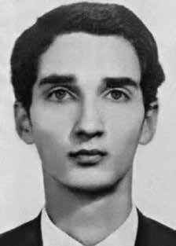

Paulo
César
Botelho
Massa
CIRCUNSTÂNCIAS DA MORTE
O último contato feito por Paulo César Botelho Massa, antes de ter sido preso, foi no dia 29 de janeiro de 1972, quando visitou a casa dos pais. Manifestação de Laís Maria Botelho Massa, mãe de Paulo César, feita perante a Associação Brasileira de Imprensa (ABI), em primeiro de abril de 1999, registra que pouco depois do sequestro de Paulo César, três agentes que se identificaram como membros do DOPS revistaram a casa da família de Paulo César à procura de uma metralhadora.
Não tendo encontrado o que buscavam, os policiais deixaram a casa levando peças de roupas de Paulo, o que representou para a mãe de Paulo César uma indicação de que seu filho ainda estaria vivo. Laís Botelho Massa registra ainda que a arma buscada pelos agentes em sua casa foi encontrada na residência de Hélio Gracie, pai de Carlos Robson e Rolls Gracie. Em razão desse fato, Carlos Robson Gracie foi preso e levado para o DOI-CODI do I Exército, na rua Barão de Mesquita. Carlos Robson Gracie foi ouvido pela Comissão Nacional da Verdade (CNV) em 27 de novembro de 2014 e confirmou que foi preso em 30 de janeiro de 1972, em casa, e levado para o DOI-CODI, onde permaneceu até abril daquele ano.
Robson esclareceu que Paulo César era amigo de seu irmão Rolls. Disse ter conhecimento de que Paulo César pertencia à ALN, organização da qual Robson não participava, embora tenha apoiado algumas de suas ações no Rio de Janeiro. Afirmou saber que Paulo César passou pelo DOI-CODI pois, quando Robson esteve lá detido, lhe foram feitas perguntas sobre assuntos que apenas Paulo César e ele próprio sabiam, como um encontro específico entre os dois em Búzios (RJ). Revelou ainda ter sido interrogado no DOI por um agente norte-americano.
The last contact made by Paulo César Botelho Massa, before he was arrested, was on January 29, 1972, when he visited his parents' house. Statement by Laís Maria Botelho Massa, mother of Paulo César, made before the Brazilian Press Association (ABI), on April 1, 1999, records that shortly after Paulo César's kidnapping, three agents who identified themselves as members of the DOPS searched Paulo César's family home looking for a machine gun.
Having not found what they were looking for, the police left the house taking pieces of Paulo's clothes, which represented for Paulo César's mother an indication that her son was still alive. Laís Botelho Massa also records that the weapon sought by agents in her home was found in the residence of Hélio Gracie, father of Carlos Robson and Rolls Gracie. Due to this fact, Carlos Robson Gracie was arrested and taken to the DOI-CODI of the 1st Army, on Rua Barão de Mesquita. Carlos Robson Gracie was heard by the National Truth Commission (CNV) on November 27, 2014 and confirmed that he was arrested on January 30, 1972, at home, and taken to DOI-CODI, where he remained until April of that year.
Robson clarified that Paulo César was a friend of his brother Rolls. He said he was aware that Paulo César belonged to the ALN, an organization in which Robson did not participate, although he supported some of its actions in Rio de Janeiro. He stated that he knew that Paulo César went through DOI-CODI because, when Robson was detained there, he was asked questions about matters that only Paulo César and he himself knew about, such as a specific meeting between the two in Búzios (RJ). He also revealed that he had been interrogated at the DOI by a North American agent.
El último contacto que tuvo Paulo César Botelho Massa, antes de ser detenido, fue el 29 de enero de 1972, cuando visitó la casa de sus padres. Declaración de Laís Maria Botelho Massa, madre de Paulo César, hecha ante la Asociación Brasileña de Prensa (ABI), el 1 de abril de 1999, registra que poco después del secuestro de Paulo César, tres agentes que se identificaron como miembros del DOPS registraron la casa familiar de Paulo César en busca de una ametralladora.
Al no encontrar lo que buscaban, los policías salieron de la casa llevándose pedazos de la ropa de Paulo, lo que representó para la madre de Paulo César un indicio de que su hijo aún estaba vivo. Laís Botelho Massa también registra que el arma buscada por los agentes en su domicilio fue encontrada en la residencia de Hélio Gracie, padre de Carlos Robson y Rolls Gracie. Por este hecho, Carlos Robson Gracie fue detenido y trasladado al DOI-CODI del 1.º Ejército, en la Rua Barão de Mesquita. Carlos Robson Gracie fue escuchado ante la Comisión Nacional de la Verdad (CNV) el 27 de noviembre de 2014 y confirmó que fue detenido el 30 de enero de 1972 en su domicilio y trasladado al DOI-CODI, donde permaneció hasta abril de ese año.
Robson aclaró que Paulo César era amigo de su hermano Rolls. Dijo tener conocimiento de que Paulo César pertenecía a la ALN, organización en la que Robson no participaba, aunque apoyó algunas de sus acciones en Río de Janeiro. Dijo que sabía que Paulo César pasó por el DOI-CODI porque, cuando Robson estuvo detenido allí, le hicieron preguntas sobre asuntos que sólo él y Paulo César conocían, como una reunión específica entre ambos en Búzios (RJ). También reveló que había sido interrogado en el DOI por un agente norteamericano.